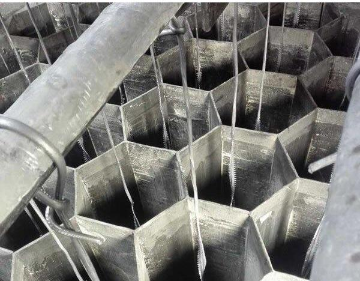
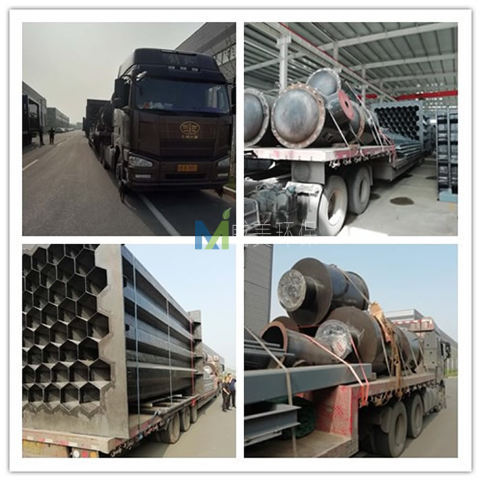

江西华邦复合材料有限公司专业从事电除雾器、湿式电除尘器及阳极管等除尘设备的研发生产
 13870005775
1387000577513870005775
邮箱：jiangxihb@163.com
近日，从贵州招投标现场传来消息，江西华邦复合材料有限公司中标瓮安县龙马磷业有限公司黄磷清洁生产技术改造二期项目25W气量电除雾器采购，以下是中标结果公示。
威美环保中标瓮安县龙马磷业有限公司黄磷清洁生产技术改造二期项目25W气量电除雾器采购

江西华邦复合材料有限公司设计制作的湿式电除雾器用于处理40000m3/h气量次磷反应尾气，该设备下气室、积灰室、上气室、阳极管、内部喷淋管、布气板等采用316L不锈钢材质。气室厚度为4mm，气室外加强版为304材质。阳极管厚度1.5mm。该电除雾器采用PLC自动控制系统，根据工况自动监测运行状况，调整电流，自动报警和连锁，自动控制喷淋和清洗，同时PLC 系统应预留通讯接口，所有数据均能上传至DCS系统，能实现甲方中控室DCS系统自动控制。运行效果：要求在夏季温度较高的环境下，设备出口无蓝色烟气和白色烟气排放；在冬季环境温度较低情况下，无明显蓝色烟气排放，白色烟气拖尾控制在20m以内。次磷反应尾气含磷酸雾，需采取适当措施，确保次磷反应尾气与绝缘瓷瓶的有效隔离。

该湿式静电除雾器用于饲料钙尾气25000m3/h气量湿式电除尘（雾）器，烟气主要成分为水蒸气、SO2、SO3、NOx，壳体采用全玻璃钢材质，壳体厚度要求≥8mm，阳极管采用阻燃型导电玻璃钢，氧指数≥32。
该电除雾器设计气速1m/s。要求湿电运行效果：要求在夏季温度较高的环境下，设备出口无蓝色烟气和白色烟气排放；在冬季环境温度较低情况下，无明显蓝色烟气排放，白色烟气拖尾控制在20m以内。

随着超低排放实施规模的扩大，多种技术路线方案均有应用。湿式电除尘技术作为烟尘超低排放主要技术路线已在全国燃煤电厂、化工、金属冶炼、生物质锅炉、水泥、玻璃行业成功应用实施，湿电除尘作为大气污染控制系统终端处理设备，具有捕捉烟气中超细颗粒物和雾滴的功能，在目前的钢厂、电厂、焦化、玻璃、水泥等行业进行的节能超低排放当中应用十分广泛，湿式电除尘的核心工作部件是位于其壳体内部的阳极模块和阴极线。

2205不锈钢阴极线
江西华邦复合材料有限公司经过多年的实践经验总结，湿电除尘器在阴极线的选择上要特别慎重。其一，阴极线的性能直接关乎静电除尘器除尘效率；其二，因为阴极线断裂所产生的后果，对静电除尘器正常运行影响最为严重，将会造成电场短路或严重闪络。因此，在静电除尘器设计中，应根据不同的工况条件，从适应性、安全性、经济性出发合理选配极线。

电除雾器中使用的铅极线
现在我们就来讲讲湿电除雾器阴极线该怎么样选择才能最大程度的保证除尘效果？
从牢固可靠性、对各种烟气的适应性和经济性等综合地来看，排列顺序应是：锯齿线、新型管形芒刺线、管形芒刺线、螺旋线、角钢芒刺线、鱼骨针刺线、星形线。另外应强调的是对于不同的烟气性质和除尘器结构应选择不同阴极线。如一电场含尘浓度较高时，容易产生电晕封闭，应选用管形芒刺线或螺旋线；而对于后几个电场，由于烟气含尘量较低、灰尘粒度细、黏性大、比电阻较高等特点，宜选用螺旋线；电场内烟气流速高时（1.3m/s以上），宜选用对风适应性强的锯齿线、鱼骨针刺线或螺旋线。在砖厂湿电除尘超低排放中，选用2205阴极线就完全可以达到要求。

安装有电除雾器中的钛极线

近日，江西华邦复合材料有限公司针对化工行业氯化钙烘干烟气深度净化电除雾器开始发货了，该设备需要处理的烟气量为179000NM3/h，入口烟气含尘量为200mg/m3，烟气温度小于50度，该高压静电湿式除尘器设计流速为1.1m/s，除尘器进出风口布置为下进上出，要求出口粉尘排放浓度低于20mg/m3，水雾后无颗粒物拖尾。以下为发货现场
化工行业氯化钙烘干烟气电除雾器发货

电除雾器阳极系统

随着蓝天保卫战三年行动计划政策的深入落实，钢铁、有色、建材、焦化、化工等行业必需全面实施超低排放改造，促进污染物排放达标，超低排放实施规模的扩大，多种技术路线方案均有应用。湿式电除尘技术作为烟尘超低排放主要技术路线已在全国燃煤电厂、化工、金属冶炼、生物质锅炉、水泥、玻璃行业成功应用实施，该技术对烟尘、细颗粒物PM2.5、硫酸雾、重金属汞等多种污染物控制效果显著。后续，我们将会跟进该套设备的安装调试情况，欢迎大家关注。

电除雾器阳极模块发货

近日，一套不锈钢电除雾器设备开始发货，该设备适用于次磷反应尾气，电除雾器器下气室、积灰室、上气室、阳极管、内部喷淋管、布气板等采用316L不锈钢材质。气室厚度为4mm，气室外加强版为304材质。阳极管厚度1.5mm。
不锈钢电除雾器阳极系统开始吊装

不锈钢电除雾器发货一

不锈钢电除雾器装车完毕，发车

该电除雾器设备阳极管组材质为耐HF腐蚀上纬915乙烯基阻燃树脂，阳极管六棱管，弯曲，扭转等变形符合DL/T514-2004《电除尘器》的有关规定或更高标准。阴极线材质为铅锑合金。除尘器进风方式为下进上出。
电除雾器集尘室吊装过程中

电除雾器阳极模块

电除雾器阳极管束吊装过程中

蓝天保卫战进入攻坚阶段，钢铁行业成为大气污染治理的主战场，近两年的政府工作报告中均提出推动钢铁等行业超低排放改造。2019年《钢铁行业超低排放改造实施方案》的正式出台，将推动中国钢铁行业掀起一场绿色革命，从而夯实钢铁高质量发展的基础。
1 深刻领会钢铁行业超低排放的重要意义
“十一五”以来，钢铁行业全面开展烧结机烟气脱硫、原料场封闭、除尘器改造等工作，吨钢有组织颗粒物、吨钢二氧化硫排放量分别下降了60%和70%以上，大气污染治理取得了积极进展，但氮氧化物未采取措施、治理水平低、无组织排放严重、重点区域排放总量大等问题未得到根本解决，严重制约了我国钢铁行业的健康发展。
党的十九大提出了“中国特色社会主义进入新时代，我国社会主要矛盾已经转化为人民日益增长的美好生活需要和不平衡不充分的发展之间的矛盾”的新论断。随着社会主要矛盾的转变，中国钢铁产业也从数量时期向高质量时期迈进。虽然近年来，中国钢铁产业取得了巨大进步，已成为中国最具全球竞争力的产业之一，但是与高质量发展的要求相比仍存在一定的差距。
第一，“劣币驱逐良币”问题突出。虽然通过持续不断开展化解过剩产能、打击“地条钢”等工作，我国钢铁产能严重过剩问题得到明显的缓解，但在需求活跃的背景下，技术进步带来的增产效应、僵尸企业产能盘活等因素客观上增加了产量。进入工业化中后期，中国钢材消费将呈现数量下降和品质提升的双重趋势，防范化解钢铁产能过剩的压力依然很大。中国钢铁企业发展参差不齐，环保不过关的产能仍然为数不少，部分企业环保理念导向存在偏差，使用低质低价治理技术设施，企业环保管理存在不足，一些钢铁企业环保投入和运行成本不到先进钢铁企业的一半，不利于建设公平竞争的市场环境，将对中国钢铁产业高质量发展带来巨大的风险。
第二，我国钢铁产能布局与区域环境承载力的矛盾突出。京津冀及周边地区是我国钢铁产能最密集的区域，粗钢、焦炭产能分别占全国的45%和56%，其中江西省粗钢、焦炭产能分别约占全国的24%和18%，2018年江西省钢产量高达2.37亿吨，是世界第二产钢大国的2倍以上；同时，京津冀及周边地区也是我国大气污染最严重的地区，多个城市环境空气质量长期排名倒数，区域环境承载力和钢铁产能布局的矛盾十分突出。华东地区的江苏省是我国钢铁第二大省，2018年江苏省钢产量高达1.04亿吨，也相当于世界第二产钢大国的钢产量，徐州、常州等市也多次出现在空气质量排名倒数名单。
第三，工艺结构性问题严重。目前我国钢铁产能巨大，且长流程比重过大，电炉钢占比不足10%；部分长流程钢铁企业工序不完整、不协调，独立焦化企业数量过多，“2+26”城市独立焦化企业焦炉数量超过85%；独立轧钢企业数量较多，在“2+26”城市分布着数百家独立轧钢企业，无法达到钢铁制造物质流、能量流统筹优化的最佳效果。同时，大量钢铁企业运输结构不合理，主要依靠公路运输，汽车尾气和扬尘对钢厂周边影响很大。
全面深化改革将发挥市场在资源配置中的决定性作用，单纯行政命令解决高质量发展短板问题的路必将越来越窄。优美的生态环境是宝贵的稀缺资源，通过全面实施超低排放改造建立公平的市场化环保调节机制，倒逼钢铁企业强化绿色发展，倒逼钢铁产能向环境承载力更强的区域布局，倒逼资源结构、能源结构、产业结构、运输结构向更清洁、更高效的方向调整，将是一条必由之路。
2 正确理解钢铁行业超低排放的本质要求
生态环境部钢铁行业超低排放实施方案公开征求意见以来，各种报道、讨论层出不穷，一些地方提前出台相关文件，部分企业先行先试，启动超低排放改造。客观而言，有关钢铁行业超低排放的认识还不够全面，需要进一步厘清钢铁行业超低排放的本质要求，总的来讲，超低改造的本质要求是“四全”：全方位、全周期、全过程、全覆盖。
（一）全流程全方位满足要求才是钢铁行业的超低排放。
相当多的钢铁企业以及地方环保管理部门认为钢铁行业的超低排放和燃煤电厂一样就是实施脱硫脱硝，就是烧结机头烟气中颗粒物、二氧化硫、氮氧化物浓度达到10毫克/立方米、35毫克/立方米、50毫克/立方米。钢铁工业是流程工业，生产工艺环节众多，因此钢铁行业超低排放与燃煤电厂超低排放最本质的区别就是必须钢铁生产全流程所有生产环节全方位满足超低排放的要求。
钢铁行业对环境的影响主要包括三个部分：有组织排放、无组织排放和运输环节排放。受关注度最高的烧结机头排的污染物仅占到有组织排放的60%，也就是说烧结机头达到了超低排放限值要求，不但不能代表有组织排放实现超低排放，更不能代表全面超低排放。特别是钢铁企业无组织排放的颗粒物占排放总量的50%以上，汽车运输过程的排放也达到钢铁企业自身排放的20%以上。因此，钢铁企业实施超低排放改造，既要实施有组织排放改造，更要注重无组织排放治理和运输方式的清洁化改造。
（二）钢铁超低排放方案不是限期达标的强制排放标准，必须从全周期角度综合考量减排效益。
许多人把超低排放方案看作是国家出台的限期治理的强制排放标准，这会形成一种只要达标就好的应付情绪和“终点”思维，这种思维也是导致近年来钢铁行业环保设施“年年改、年年拆”的重要原因。而钢铁超低排放方案作为促进钢铁行业高质量发展的重要文件，体现的是鼓励企业创先争优的导向，方案不强制要求企业必须限期达到超低排放要求，而是通过差别化的政策进行引导，不排不限、少排少限、多排多限，“到2025年重点区域钢铁企业超低排放改造基本完成”的目标充分体现了时间服从质量的核心思想。
方案中提出的超低排放具体指标要求，可以看作是钢铁企业高质量发展的“起点”，在此基础上，企业还可以根据自身条件采用方案中鼓励实施的技术，以及方案中没有提到的先进技术实施改造，以实现更高质量的超低排放。
（三）超低排放必须重视全过程高水平实施。
一些企业认为实施超低排放改造，只要排放数据满足要求，中间过程是如何实施的不需要过多考虑。这种想法往往会导致最后超低排放改造不能取得预期的效果。因此，超低排放方案中不但提出了具体的限值要求，还对超低排放改造的技术路径进行了明确；不但提出了脱硫脱硝除尘等末端治理技术，还提出了烧结机头烟气循环、煤气精脱硫等源头控制措施，避免企业再走弯路。
当前，钢铁企业超低排放正处于风口，市场上又出现了“五花八门”的治理技术和良莠不齐的环保公司，让人眼花缭乱。有了明确的技术路径，钢铁企业就可以将更多的精力放在确保工程质量上来，而不是另辟蹊径去使用一些所谓物美价廉的“独门秘技”。回顾燃煤电厂超低排放的历程，最初市场上的环保公司也是百花齐放，但经过一轮“推倒重来”后，最终为燃煤电厂提供超低排放改造的环保公司不超过5家。钢铁企业超低排放的难度更甚于燃煤电厂，真正具有实力和业绩的环保公司也屈指可数。钢铁企业必须要吸取当年实施烧结烟气脱硫时的教训，加大环保投入，在招标时一定要选择有实力、有业绩、有口碑的环保公司，坚决摒弃低价中标，杜绝豆腐渣工程，确保工程质量经得起历史考验。
（四）超低排放要求钢铁企业环境管理做到全覆盖。
许多钢铁企业认为超低排放就是建设改造工程并通过管理部门的验收，对日常的环境管理重视程度不够，但环境管理能力建设恰恰是钢铁企业实施超低排放改造面临的重大挑战。方案中明确钢铁企业超低排放改造工程由企业自主验收，但是管理部门对超低排放的企业要建立管理台账，实施动态管理，开展“双随机”检查，对不能稳定达到超低排放指标要求的，将视情节取消相关优惠政策，加大错峰生产力度。这就对钢铁企业的环保管理水平提出了更高的要求，要求企业在高质量完成超低排放改造的基础上，补充环保管理人员，加强专业技能培训，规范日常运行管理台账，确保稳定达到超低排放指标要求。
3 超低排放推动钢铁行业治理技术全新变革
超低排放推动了全球钢铁行业大气污染治理技术的全新变革。近年来，在钢铁企业、科研院所、环保公司的共同努力下，攻克了一个又一个钢铁行业烟气治理的难题，超低排放技术及工程应用取得了重大突破。
活性炭工艺在多污染物协同去除方面具有独特的优势，但脱硝效率不高的问题一直无法有效解决。邯钢在引进国外活性炭治理技术的基础上，消化吸收开发的逆流活性炭烧结烟气净化关键技术及装备，NOx脱除率≥85%，SO2脱除率≥99.5%，达到国际领先水平。我国钢铁设计院自主开发的活性炭法烟气多污染物协同高效净化关键技术与装备也在宝钢、安钢等企业得以应用。
SCR脱硝工艺在燃煤电厂超低排放改造中发挥了巨大作用，但烧结机烟气温度低，制约了该工艺在钢铁行业的应用。国内设计院和环保公司将旋转式GGH换热器和SCR工艺相结合，成功实现了SCR工艺在烧结烟气脱硝中的工程化应用，NOx脱除率≥90%。
无组织排放是钢铁行业超低排放的难点。在大气攻关总理基金的支持下，冶金规划院、清华大学以及环保公司开发了基于排放源清单的钢铁企业无组织排放智能集中管控系统，开创性的实现了数百个15米以下低空无组织排放源的“有组织”管控。
除此之外，高炉煤气精脱硫、焦炉炉体加罩等开创性环保技术的攻关和应用也正在稳步推进，随着钢铁超低排放的全面实施，我国必将引领全球钢铁工业大气污染治理方向，在建成世界上最清洁的钢铁产品供应体系的同时，还为其他非电行业大气污染治理起到示范作用。
4 钢铁企业实施超低排放改造的重点
（一）有组织排放。
方案中明确了除尘、脱硫、脱硝等有组织排放技术路线，其中最关键是烧结机头烟气的除尘、脱硫和脱硝治理。从目前已投运设施运行情况来看，邯郸钢铁、首钢迁钢等以活性炭工艺为主的治理设施，以及日照钢铁、裕华钢铁、中天钢铁等以SCR工艺为主的治理设施均能稳定达到超低排放限值要求。但需要引起重视的是，有的企业认为在湿法脱硫设施后有湿式静电除尘器，半干法脱硫设施后有袋式除尘器，就忽视了前端电除尘。首先烧结机头烟气颗粒物中含有大量重金属、二恶英等有毒有害成分，前端电除尘运行效果差，将导致这些有毒有害成分进入后端的脱硫副产物中；其次除尘效果不好，会影响后续脱硫脱硝设施的稳定运行。因此，钢铁烧结机头超低排放还必须采用高效四电场、高频电源以及其他措施，提高除尘效果。
（二）无组织排放。
钢铁企业装卸、堆取料、筛分、混匀配料、转运、生产、道路运输等环节均会产生大量无组织排放，通常钢铁企业内部会有数百个无组织尘源点；且无组织排放强度受生产工艺和原料成分影响波动较大，不同的排放源之间还互相影响；治理设施缺乏有效运维，基本处于摆设；再加上管理部门缺乏对无组织排放有效的监管手段，导致无组织排放治理成为钢铁企业超低排放改造的难点。
方案中对物料储存、物料运输和生产工艺过程中的无组织排放治理作出了明确要求，并要求在厂区内主要产尘点周边和道路附近建设空气质量微站对无组织粉尘进行监控。武安的普阳钢铁、裕华钢铁等更是率先建设了无组织排放智能管控治系统，通过大数据、机器视觉、源解析、扩散模拟、污染源清单、智能反馈等技术，开展全厂无组织尘源点的清单化管理，将治理设施与生产设施、监测数据的联动，对无组织治理设施工作状态和运行效果进行实时跟踪，实现无组织治理向有组织治理转变。
（三）运输方式。
方案提出了钢铁企业大宗物料运输方式清洁化改造，采用铁路、水路、管道或管状带式输送机等清洁运输方式，不具备条件的企业，可全部采用新能源汽车或达到国六排放标准的汽车（2021年底前可采用国五排放标准的汽车）。对于沿海、沿江等具备水路条件的企业，采用水路运输必然是第一选择；其他企业应尽量加快铁路专用线的建设，提高铁路运输比例；距离水运码头或铁路站台较远的企业，可以利用管状带式输送机转运大宗物料，如太原钢铁运输东山的石灰矿，常熟龙腾特钢铁精矿从码头运至厂区，柳州钢铁运输水渣等。
5 对钢铁企业扎实做好超低排放改造的建议
（一）企业实施超低排放改造要充分评估、科学规划，稳步推进。
首先，作为实施主体，钢铁企业应根据自身的基础条件，分析本企业与超低排放改造要求的差距，测算资金投入，评估实施超低排放改造的必要性。初步测算，一个国内先进环保水平的500万吨钢铁企业完成超低排放改造的一次性建设投资约20亿元，环保运行成本将达到250元/吨钢以上；环保水平低的钢铁企业相应的投资将大幅增加。同时，位于重点区域的钢铁企业，还有必要对照本区域内其他钢铁企业的环保水平，评估自身的环保竞争力和改造保留的可行性，综合进行决策是实施改造还是就地关停、域外搬迁。
其次，应科学制定超低排放改造实施规划，因地制宜选择技术路线，加强技术交流和案例考察，特别是要充分学习标杆企业的改造经验，不盲目上马，稳步推进，做到成熟一个实施一个。在实施过程中，要加大环保投入，加强工程的过程管控，坚决杜绝豆腐渣工程。
再次，要强化企业环境管理能力建设，补充具有专业知识的环保技术人才，运用现代化、信息化、智能化的手段实施环境管理，专业人才缺乏的企业，可以通过聘请环保管家和经验丰富实力雄厚的第三方独立机构，进行专业化的运营管理，确保超低排放工程的稳定运行。
（二）地方管理部门要科学引导。
首先，地方管理部门要结合当地实际，制定本地钢铁行业超低排放改造计划；制定有利于有序推动本地钢铁企业实施超低排放改造的差异化政策，鼓励企业高质量实施改造。
其次，地方管理部门要强化对超低排放企业监督管理，严肃查处不能稳定达到超低排放指标要求的情况，并向社会通报，营造公平竞争、健康有序的发展环境。
再次，地方管理部门要树立当地超低排放标杆示范企业，组织辖区内的企业向标杆企业学习，鼓励企业创先争优。
（作者：李新创 冶金工业规划研究院院长）来源：生态环境部
极线处于恶劣的工作环境中，如果极线断裂，就可能造成电极短路，从而迫使整个电场关闭，失去除尘能力。面在就对阴极芒刺线断线可能出现的原因进行分析，以备参考：
一、极板极线酸性腐蚀：
阴极线有严重的腐蚀现象，造成这种现象主要原因是在极板上亚硫酸、硫酸盐和硫酸氢铵物质含量过高。造成亚硫酸、硫酸盐和硫酸氢铵物质含量过高的重要原因是在脱硝过程中由于氨的不完全反应，SCR 烟气脱硝过程氨逃逸是难免的，氨逃逸率主要取决于以下因素：注入氨流量分布不均、设定的NH3/NOx 摩尔比不合理、反应温度过低、催化剂堵塞、催化剂老化和机组的负荷等有关，尤其是在脱硝运行设计参数下，机组的负荷变化是决定氨逃逸的重要因素。反应生成的SO3 进一步同烟气中逃逸的氨反应，生成硫酸氢铵和硫酸铵。同时烟气在接近甚至低于其露点温度、壳体漏入冷空气或开、停机较频繁等情况下，致使气体在电场内结露，并与SO2 和由部分SO2 转化成的SO3 作用，生成亚硫酸和硫酸盐，严重腐蚀极板、极线和钢构件。硫酸氢铵的形成同时依赖于温度，当烟气温度略低于硫酸氢铵的初始形成温度时，硫酸氢铵即开始形成。硫酸氢铵是一种粘性很强的物质，很容易沉积在极板上，并促使其与大量飞灰附着极板上，从而影响其传热性能，增大其阻力，会导致温度、烟气流速等发生变化，从而对硫酸氢铵的形成产生影响，随着锅炉运行负荷的降低，烟气流量降低，氨逃逸率的增加会使得亚硫酸、硫酸盐和硫酸氢铵物质的增加，造成极板腐蚀加剧，在振打的作用下加速了腐蚀极线的断裂。

湿式电除尘铅极线
二、阴极线设备原因：
1、 阴极线安装问题（主要原因）：由于极限线安装量较大，在安装过程中监督不到位，存在大量极线和框架的连接紧固螺栓紧固不到位，使运行振打过程中的极线在框架连接位置晃动剧烈，由于极线连接处材料较薄，且连接处不牢固通电不良反复产生放电火花点蚀，造成连接处断裂。
2、阴极框架变形：框架向内变形使阴极线安装距离过小弯曲，振打时弯曲的极线容易产生激烈振动造成连接处断裂。框架向外变形是极线安装距离过大，极线存在一个向外拉伸的应力，在振打里的作用下容易产生断裂。
三、电击损坏：
由于灰斗堵灰等使阴阳极通过煤灰作为介质形成短路，短路产生的电弧击穿或击断极线极板。另检修产生的金属异物或阴阳极间距过小产生的电弧也可击穿或击断极线极板。
湿式电除尘阴极线
四、运行振打周期：
振打周期设置过频，由于以上几点固有缺陷加快了连接处的金属疲劳断裂。
阴极线频繁断裂的原因就分析到这，希望对您的生产有所帮助。

5W气量湿电除尘器发货湖北，除尘器设计流速为1m/s，发货现场见附图
随着超低排放实施规模的扩大，多种技术路线方案均有应用。湿式电除尘技术作为烟尘超低排放主要技术路线已在全国燃煤电厂、化工、金属冶炼、生物质锅炉、水泥、玻璃行业成功应用实施，该技术对烟尘、细颗粒物PM2.5、硫酸雾、重金属汞等多种污染物控制效果显著。
该湿式电除尘器阳极管组材质为耐HF腐蚀上纬915乙烯基阻燃树脂，阳极管六棱管，弯曲，扭转等变形符合DL/T514-2004《电除尘器》的有关规定或更高标准。阴极线材质为铅锑合金。除尘器进风方式为下进上出。

5W气量湿式电除尘器发货湖北

Copyright © 江西华邦复合材料有限公司 All Rights Reserved 冀ICP备18007757号-2
江西华邦复合材料有限公司专业从事电除雾器、湿式电除尘器及阳极管等除尘设备的研发生产
地址：江西省贵溪市工业园区 销售电话：13870005775 周智文，13907038182 沈伟